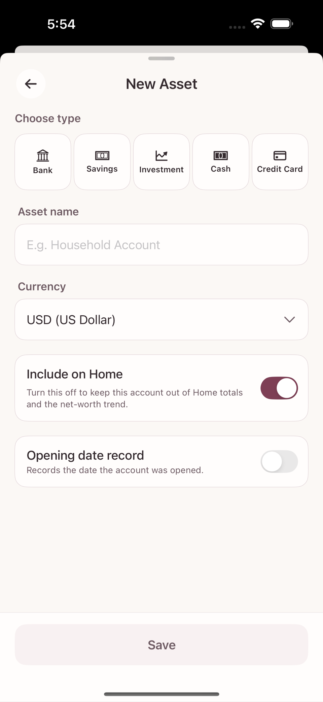

An account is the place money actually sits, or where debt accrues (see chapter 2). This chapter covers creating a new account and getting its starting balance right.
When you add a new account you choose one of these five types.
| Type | Examples | What the balance means |
|---|---|---|
| Bank | Checking account, salary account | Cash you actually hold |
| Savings | Term deposit, savings plan | Savings tied up until maturity |
| Investment | Brokerage account | Assets measured by actual deposits and withdrawals, not market value |
| Cash | Wallet, emergency cash | Cash you actually hold |
| Credit Card | Credit card | Debt that builds up as you spend — not an asset |
A credit card behaves differently from the other four. The more you use the card, the more "the amount owed on this card" grows, and paying the bill on the due date reduces that debt.
The screen is titled New Asset, and every type shares an Asset name field.

If you enter the real current balance of the account or card when you create it, the app automatically creates one transaction that produces that balance. The name of the input field depends on the type.
This value is not stored as a number; it creates a transaction that establishes your starting point. As real transactions accumulate, the Current Balance shown on screen is always recalculated from them.
If your bank app and Tameio drift apart (a missed transaction, rounding, and so on), you do not need to open a separate screen. Tap the "Current Balance" figure at the top of the account detail screen and type the real value. Then tap Match this balance, and a single adjusting transaction for the difference is created so the balance matches reality. If the difference is zero, no transaction is created.
Ordinary bank, card, cash, and investment accounts have no "close" or "archive" menu — the manage menu (⋯) on the account detail screen offers only rename and delete. It is perfectly fine to leave an account you no longer use sitting in the list. If you really want it gone, use the deletion described in chapter 14 (which behaves differently depending on whether the account has transactions). Savings accounts are the one exception: the account detail screen offers a separate flow to record the principal and interest on maturity or early termination and then Close the account.